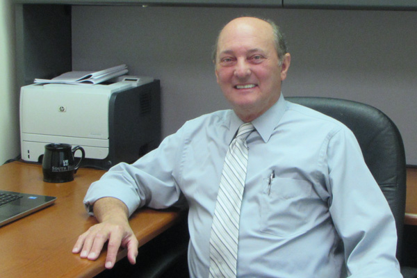
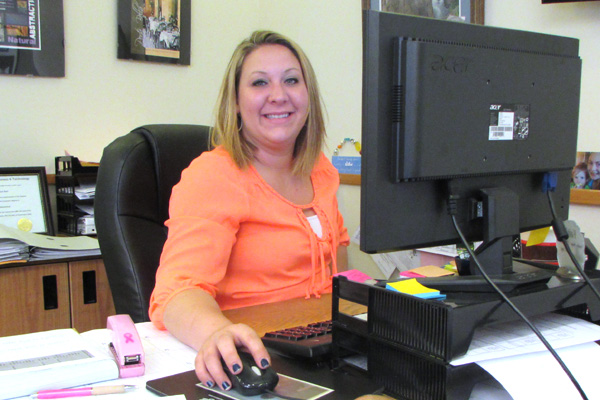
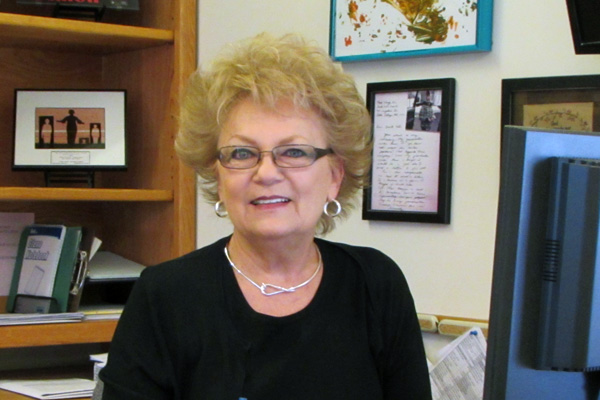

Director of Admissions
Brian Rutter joined South Hills in 2015 as the Director of Admissions where he is responsible for all aspects of student enrollment, admissions processes, and admissions policies for the school’s three locations.
Rutter holds a B.S. in Marketing from The Pennsylvania State University’s Smeal College of Business. He has served as business owner for a division of ICAT Logistics where he was also the VP of Operations. Currently he is a Co-Owner of CrossFit Lionheart in State College and is actively involved in several community outreach programs.
Rutter enjoys spending his free time with his wife and two children and competing in fitness competitions of any sort, primarily CrossFit competitions.
Admissions Coordinator
Ann Davis has been in the Admissions Department at South Hills since June 2004. A 1999 graduate of South Hills, Ann has worked for various companies throughout Centre County before landing her current position at South Hills. Additionally, she is the Phi Beta Lamda advisor for the State College campus.
Admissions Representative
State College Main Campus
Dave Andrus has been a South Hills Admissions Representative since December 6, 2010. A 2003 graduate of Newport Business Institute, Dave has worked in the admissions field for 11 years. He enjoys guiding school applicants through the application and admissions process and helping students achieve their skills, education, and career goals. Previously, Dave worked as the Assistant Director of Admissions at Newport Business Institute and was employed in the automotive field as a Parts Department Manager and Inventory Control Specialist for 22 years.
Admissions Representative
State College Main Campus
Brittani Bell started working at South Hills School of Business & Technology in April 2010. She is a graduate of the Office Professional program (now called Business Office Specialist), having received her Associate in Specialized Business degree in September 2008. She eventually landed a position at South Hills as an Administrative Assistant at the now-closed Philipsburg location and went on to earn her current spot as an Admissions Representative at the State College main campus.

Admissions Representative
State College Main Campus
Vickey Warshaw has been an Admissions Representative for South Hills since June 2007. She previously served as Director of Admissions. Vickey has 21 years’ experience in admissions, having worked in a total of six post-secondary schools in positions such as Career Services Director and Regional Director of Admissions. Her passion is helping others navigate their career paths to find success.